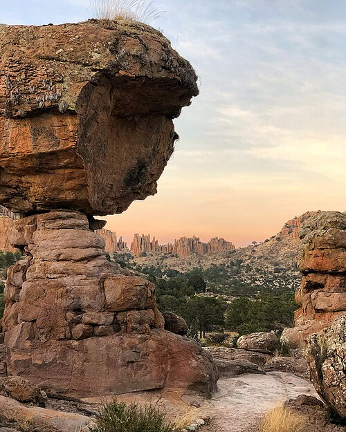
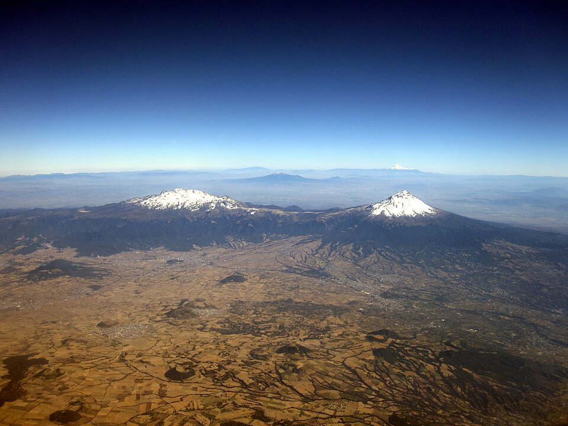
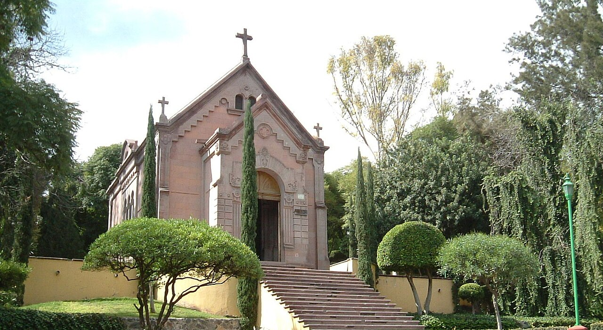
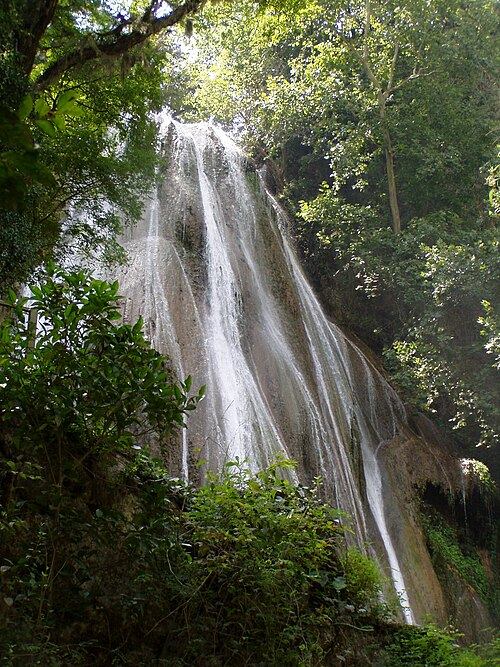

Sierra de Órganos
Sombrerete
Imponentes pilares de arenito, mata e mirantes formam uma paisagem de relevo marcante no centro-sul do país.
Um país de grandes distâncias
As dimensões do México permitem encontrar cenários muito diferentes: capitais movimentadas, cidades antigas, formações rochosas e cursos d’água ladeados por montanhas.
Ao planejar um roteiro, vale escolher uma área ou região por vez e reservar tempo para os deslocamentos entre as paradas.
Quatro cenários

Sierra de Órganos
Imponentes pilares de arenito, mata e mirantes formam uma paisagem de relevo marcante no centro-sul do país.

Popocatépetl e Iztaccíhuatl.
Os vulcões estão inseridos no Parque Nacional Iztaccíhuatl-Popocatépetl (também chamado de Izta-Popo), uma área natural protegida na cordilheira da Sierra Nevada.

Santiago de Querétaro
A capela foi erguida exatamente no local onde o imperador Maximiliano I do México e seus generais, Miguel Miramón e Tomás Mejía, foram executados por fuzilamento em 19 de junho de 1867, após a queda do Segundo Império Mexicano.

Cola de Caballo
É uma imponente queda d'água natural de cerca de 25 a 27 metros de altura, cuja forma lembra a cauda de um cavalo.
Planejamento
Escolha uma cidade para chegada e saída e organize as atrações próximas antes de acrescentar outras regiões.
As distâncias podem ser grandes. Confira trajetos e horários atualizados ao definir os dias de cada parada.
Intercale visitas urbanas com dias ao ar livre para conhecer diferentes paisagens sem sobrecarregar o roteiro.
Em templos e locais históricos, siga as orientações do espaço e respeite as regras de visitação.